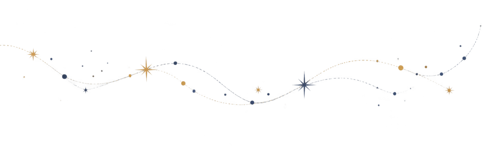
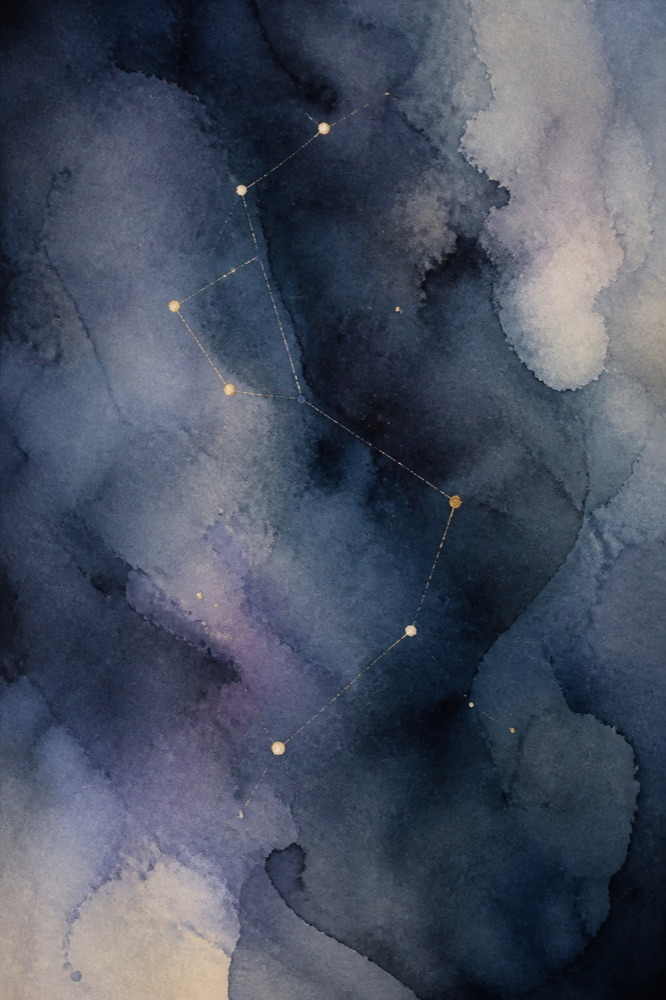
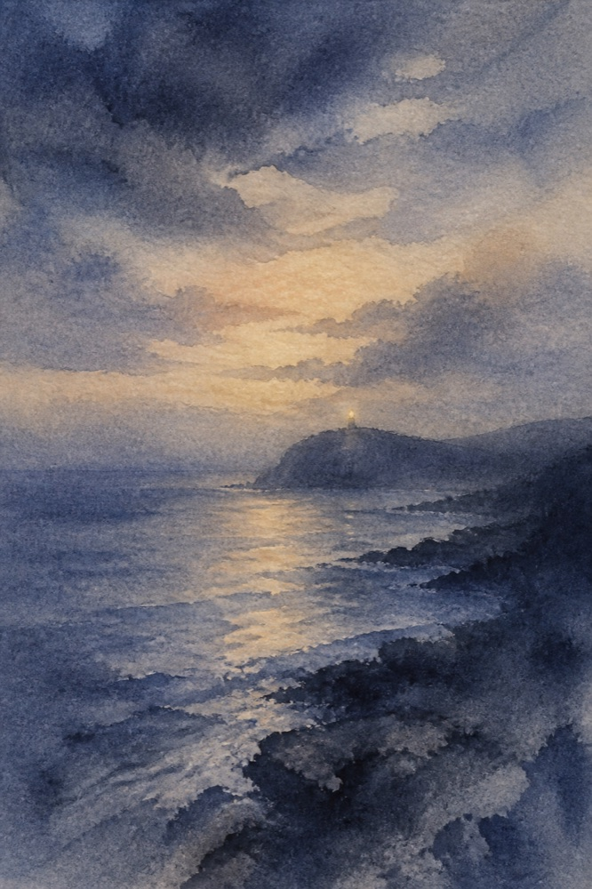
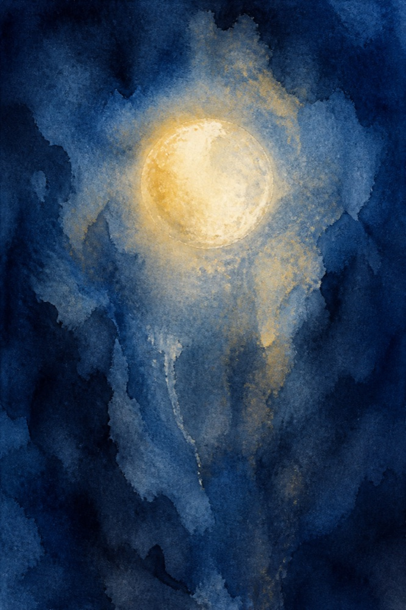
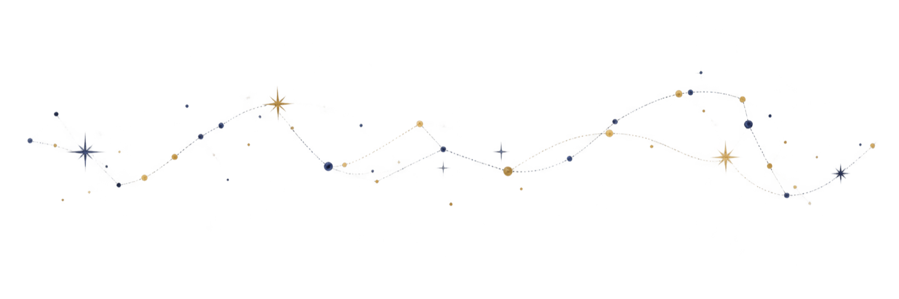

AI + Trust
I shape trustworthy AI experiences by uncovering how people form and calibrate trust, understand system behavior, and decide when to take control.
Senior UX Researcher/Manager
9+ Years
100+ Studies
1000+ Participants
Hey, glad you're here
I'm Alexandra, a senior UX researcher based in the SF Bay Area
I shape trustworthy AI experiences by uncovering how people form and calibrate trust, understand system behavior, and decide when to take control.
I lead iterative research to define scalable UX architecture when complex product systems outgrow their legacy structure.
I turn ambiguous ideas into validated product direction, from early exploration through launch.
I build the rhythms and programs that put evidence in front of the people whose decisions it should change.



selected work
Messy, ambiguous product problems → evidence-backed strategy that shipped.

A 32-session mixed-methods study that redirected strategy away from mobile-first — and defined the modular IA behind MB5.

The research arc behind a conversational security advisor — trust in a personalized system before the industry had the vocabulary for it.

Redesigning Nebula around Security Posture Assessment — card sorts to competitor IA to usability with SMB admins and MSPs.
a trail of discoveries. a direction forward.
Understand the system → explain the mechanism → influence direction early → make the evidence travel.
In a complex system, pain points rarely exist in a single dimension. The UX architecture blueprint is where research creates its highest leverage.
A result becomes useful when I can explain what produced it — the “why” is what transfers to the next decision.
The most leverage is before direction hardens. Move fast when decisions are reversible; apply more rigor when they aren’t.
Research scales when evidence travels, not when everyone is asked to become a researcher.

kind words
I was always impressed by her ability to cut through the fog that can surround research topics and identify the underlying questions.Ryan Krepps · Sr. UX Researcher More kind words on LinkedIn →